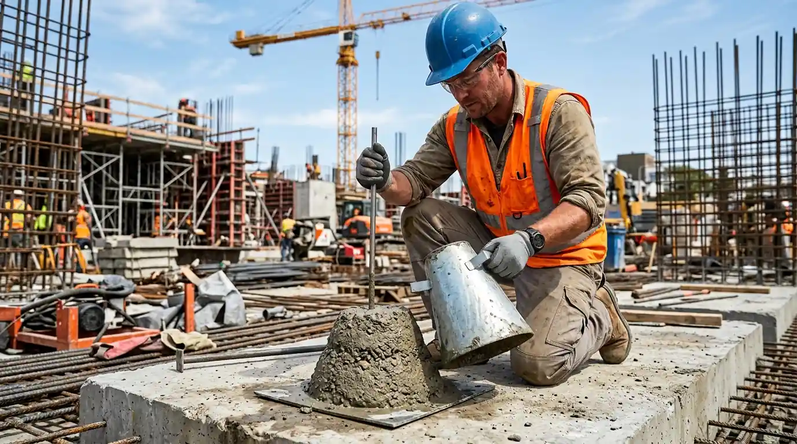

Mengapa Kualitas Campuran Cor Beton Menentukan Ketahanan Struktur Bangunan?
Pentingnya kualitas campuran cor beton terletak pada kemampuannya mengikat agregat menjadi monolit padat yang tahan beban aksial, geser, serta cuaca ekstrem tropis.
Dalam rekayasa struktur sipil, beton bertulang merupakan material komposit di mana beton menahan gaya tekan (compressive stress) dan besi tulangan menahan gaya tarik (tensile stress). Apabila pasta semen yang membungkus agregat tidak mencapai kepadatan homogen akibat campuran yang salah, daya lekat (bonding strength) antara beton dan besi tulangan akan melemah. Hal ini menyebabkan struktur rentan mengalami keruntuhan getas (brittle failure) saat menerima beban kejut seperti gempa tektonik.
Data dari Pusat Litbang Perumahan dan Permukiman Kementerian PUPR (Laporan Investigasi Struktur Bangunan 2024) mencatat bahwa 68,4% kegagalan struktur beton bertulang pada bangunan non-gedung dan rumah tinggal di Indonesia disebabkan oleh mutu beton di lapangan yang tidak mencapai 70% dari spesifikasi rencana awal. Kegagalan ini paling sering berakar pada penambahan air berlebih di lokasi kerja untuk mempermudah perataan tanpa menghitung penurunan kekuatan mekanisnya.
Faktor lingkungan tropis dengan kelembapan tinggi dan paparan asam air hujan juga menuntut beton memiliki tingkat porositas sangat rendah. Kualitas campuran yang padat kedap air (watertight concrete) mencegah infiltrasi oksigen dan kelembapan ke dalam selimut beton, sehingga mencegah korosi karbonasi pada besi tulangan yang dapat meretakkan dinding struktural dari dalam.
Bagaimana Rasio Campuran Semen Pasir Kerikil yang Tepat Sesuai Standar SNI?
Rasio campuran semen pasir kerikil standar SNI 2847:2019 mengacu pada perbandingan volume atau berat terukur guna menghasilkan kuat tekan terencana tanpa kelebihan air.
Secara konvensional di lapangan, tukang bangunan sering menggunakan rumus perbandingan volume 1 Semen : 2 Pasir : 3 Kerikil (1:2:3) untuk pekerjaan struktural lantai dan kolom. Namun, dalam standar rekayasa modern yang diterapkan oleh Kontraktor Bangunan, penentuan proporsi adukan (mix design) dihitung berdasarkan berat nominal material kering, kelembapan agregat, serta faktor air semen (FAS / water-cement ratio) maksimum 0,45 hingga 0,55.
- Semen Portland Tipe I / PCC: Gunakan semen segar berstandar SNI yang belum menggumpal akibat kelembapan gudang.
- Pasir Cor (Agregat Halus): Wajib berbutir tajam, kadar lumpur <5% (uji pengendapan botol), bebas zat organik dan garam.
- Batu Split (Agregat Kasar): Ukuran 10-20 mm atau 20-30 mm hasil mesin pemecah batu (crushed stone), bersudut runcing dan keras.
- Air Bersih: Menggunakan air tawar layak minum, bebas minyak, asam, basa kuat, dan kandungan sulfat berbahaya.
Kadar air yang terlalu tinggi merupakan musuh nomor satu kualitas beton. Menambahkan air 10 liter melebihi mix design demi mempermudah penuangan dapat memangkas kuat tekan beton hingga 8-12 MPa. Untuk menjaga kemudahan pengerjaan (workability) tanpa merusak kekuatan, kontraktor profesional memanfaatkan bahan tambahan (admixture) seperti superplasticizer berbasis polikarboksilat.
Apa Perbedaan Mutu Beton K225 K300 untuk Konstruksi Rumah dan Gedung?
Perbedaan mutu beton K225 dan K300 terletak pada kapasitas kuat tekan karakteristik benda uji kubus 15x15x15 cm pada umur 28 hari, yaitu masing-masing 225 kg/cm² dan 300 kg/cm².
Pemilihan mutu beton harus disesuaikan dengan fungsi elemen struktur dan beban kerja yang direncanakan oleh arsitek dan perencana struktur sipil. Beton mutu K-175 hingga K-225 umumnya dialokasikan untuk struktur rumah tinggal 1 hingga 2 lantai, jalan lingkungan, atau lantai kerja rabat. Sedangkan beton mutu K-250, K-300, hingga K-350 mutlak dipersyaratkan untuk dak bentang panjang, kolam renang, basement kedap air, ruko 3-4 lantai, dan area parkir kendaraan berat.
| Parameter Mutu | Mutu Beton K-175 / K-200 | Mutu Beton K-225 / K-250 | Mutu Beton K-300 / K-350 |
|---|---|---|---|
| Kuat Tekan Karakteristik (28 Hari) | 175 - 200 kg/cm² (fc' 14.5 - 16.6 MPa) | 225 - 250 kg/cm² (fc' 18.7 - 20.8 MPa) | 300 - 350 kg/cm² (fc' 24.9 - 29.0 MPa) |
| Aplikasi Elemen Struktur | Lantai kerja, sloof rumah 1 lantai, pagar pembatas | Kolom utama, balok lantai 2, tangga beton rumah | Plat dak atap bentang lebar, kolom ruko, basement tahan air |
| Metode Pencampuran Rekomendasi | Molen mekanis semi-otomatis (Site Mix) | Site mix terkontrol atau Ready Mix Truck | Ready Mix Batching Plant bersertifikat SNI |
| Ketahanan Retak & Kedap Air | Standar (Wajib waterproofing tambahan) | Tinggi (Mikropori rapat) | Sangat Tinggi (Struktur monolit kedap air superior) |
Menurut survei berkala Asosiasi Perusahaan Pracetak dan Prategang Indonesia (AP3I Periode 2025/2026), penggunaan beton mutu siap pakai (ready mix) K-250 ke atas pada proyek residensial perkotaan meningkat 42% karena menjamin homogenitas mutu agregat dibanding pencampuran manual cangkul di lokasi yang memiliki deviasi kuat tekan hingga ±35%.
Mengapa Uji Slump dan Curing Beton Sangat Krusial Pasca Pengecoran?
Uji slump memastikan kekentalan adukan beton sebelum dituang, sedangkan proses curing menjaga kelembapan pasta semen agar reaksi hidrasi kristal kalsium silikat hidrat (C-S-H) berlangsung sempurna.
Sebelum truk pengaduk (mixer truck) menuangkan beton ke talang atau pompa kodok (concrete pump), pengujian kerucut Abrams (slump test) wajib dilakukan oleh pengawas lapangan. Standar nilai slump untuk plat lantai dan balok bertulang berkisar antara 10 ± 2 cm hingga 12 ± 2 cm. Nilai slump yang melampaui toleransi mengindikasikan beton terlalu cair dan berisiko mengalami pemisahan butir pasir dari kerikil.

Pengujian slump cone di lapangan dan silinder uji tekan beton untuk memvalidasi kepatuhan spesifikasi teknis SNI.
Setelah adukan mengeras (mencapai final set sekitar 6-8 jam), tahapan yang kerap diabaikan adalah perawatan beton (curing). Hidrasi semen merupakan reaksi eksotermik yang melepaskan panas hidrasi. Jika permukaan beton dibiarkan kering terpapar terik matahari tanpa dibasahi, air di dalam adukan akan menguap cepat dan memicu retak susut plastis (plastic shrinkage cracks).
Metode perawatan standar meliputi penggenangan air (ponding) pada plat dak lantai 2 selama minimal 7 hari berturut-turut, penutupan permukaan kolom dan balok menggunakan karung goni basah atau curing compound polimer, serta larangan melepas bekisting penyangga sebelum beton mencapai kekuatan minimal 70% (rata-rata 14-21 hari untuk bentang balok utama).
Bagaimana Menghindari Kerusakan Struktur Akibat Segregasi dan Bleeding Beton?
Menghindari segregasi dan bleeding beton dilakukan dengan membatasi tinggi jatuh pengecoran maksimal 1,5 meter serta menggunakan vibrator beton dengan durasi getar tepat 10-15 detik per titik.
Segregasi adalah fenomena pemisahan kerikil kasar yang mengendap ke dasar bekisting sementara pasta semen naik ke atas, menghasilkan rongga sarang lebah (honeycomb) yang melemahkan daya dukung kolom. Sementara bleeding adalah naiknya air bebas ke permukaan beton yang membawa partikel semen halus, meninggalkan saluran kapiler yang memicu kebocoran dak saat musim hujan.
Teknik mitigasi profesional yang wajib diterapkan di lapangan:
- Penggunaan Mechanical Vibrator: Jarum vibrator harus dimasukkan vertikal tegak lurus hingga menembus lapisan cor sebelumnya sedalam 5-10 cm, ditarik perlahan, dan tidak boleh digunakan untuk mendorong adukan beton secara horizontal.
- Tinggi Jatuh Cor: Menggunakan pipa tremi atau talang miring jika jarak penuangan melebihi 1,5 meter dari dasar bekisting.
- Kerapatan Bekisting: Sambungan triplek bekisting harus dilapisi seal tape atau busa agar air semen tidak bocor keluar saat proses pemadatan.
Layanan Pengecoran Presisi dan Pengadaan Beton Bersertifikasi dari Kontraktor Bangunan
Membangun rumah impian, ruko komersial, maupun struktur gudang pabrik membutuhkan ketelitian teknik tanpa kompromi pada mutu material.
Kontraktor Bangunan hadir sebagai mitra konstruksi terpercaya di Indonesia yang menerapkan sistem manajemen mutu terpadu dari pengujian batching plant, uji laboratorium silinder beton, hingga pengawasan pemadatan vibrator berstandar sertifikasi LPJK.
Keunggulan layanan konstruksi struktural kami:
- Garansi Struktur Hingga 10 Tahun: Perlindungan jaminan konstruksi resmi berkekuatan hukum terhadap keretakan dan kebocoran struktural.
- Katalog Material Transparan: Seluruh semen, pasir muntilan, batu split pecah mesin, dan besi beton menggunakan sertifikasi SNI resmi dengan mill certificate terlampir.
- RAB Detil & Tanpa Biaya Tersembunyi: Rincian volume m³ cor beton, tonase pembesian, dan sewa alat berat dihitung secara presisi dengan metodologi DED (Detail Engineering Design).
Pertanyaan yang Sering Diajukan (FAQ)
Kesimpulan Praktis
Kekokohan bangunan masa depan ditentukan oleh ketelitian campuran cor beton hari ini. Jangan pertaruhkan keamanan keluarga dan aset properti Anda dengan pencampuran manual tanpa standar uji laboratorium. Hubungi tim teknis kami untuk konsultasi struktur, perhitungan RAB, dan survei lapangan tanpa biaya.